|
3-1-4-2
|
Sweden | 5 | - | 1 | Tunisia |
5-3-2
|
| HT 2-1 | ||||||
|
FIFA World CupMonday 15 June 2026
|
||||||
- Venue
- Estadio Monterrey
- Attendance
- 50,987
- Referee
- Yael Falcón Pérez
Goal7'
Y. Ayari
Goal30'
A. Isak
Assist: V. Gyökeres
Goal59'
V. Gyökeres
Assist: A. Isak
- 2
Substitution65'
G. Gudmundsson
E. Stroud
B. Nygren
L. Bergvall
Substitution84'
J. Karlström
M. Svanberg
Goal84'
M. Svanberg
Assist: A. Isak
Substitution90'
A. Isak
A. Elanga
Substitution90+1'
A. Bernhardsson
D. Svensson
Goal90+6'
Y. Ayari
Assist: L. Bergvall
Whistle45+5'
45+5'
Goal43'
O. Rekik
Assist: H. Mejbri
Yellow card54'
R. Khedira
- 3
Substitution72'
E. Skhiri
E. Achouri
E. Saad
S. Tounekti
Y. Valery
H. Mahmoud
Substitution83'
R. Khedira
I. Gharbi
Substitution84'
A. Ben Slimane
F. Chaouat
Sweden | |
|---|---|
Goalkeeper | |
| 23 | K. Nordfeldt |
Defender | |
| 2 | G. Lagerbielke |
| 3 | V. Lindelöf |
| 4 | I. Hien |
Midfielder | |
| 5 | G. Gudmundsson 65' |
| 10 | B. Nygren 65' |
| 16 | J. Karlström 84' |
| 18 | Y. Ayari 7'90+6' |
| 21 | A. Bernhardsson 90+1' |
Forward | |
| 9 | A. Isak 30'90' |
| 17 | V. Gyökeres 59' |
Substitutes | |
| 7 | L. Bergvall 65' |
| 8 | D. Svensson 90+1' |
| 11 | A. Elanga 90' |
| 19 | M. Svanberg 84'84' |
| 24 | E. Stroud 65' |
Tunisia | |
Goalkeeper | |
| 1 | A. Chamakh |
Defender | |
| 2 | A. Abdi |
| 3 | M. Talbi |
| 4 | O. Rekik 43' |
| 20 | Y. Valery 72' |
| 21 | M. Ben Hmida |
Midfielder | |
| 10 | H. Mejbri |
| 13 | R. Khedira 54'83' |
| 17 | E. Skhiri 72' |
Forward | |
| 8 | E. Saad 72' |
| 25 | A. Ben Slimane 84' |
Substitutes | |
| 7 | E. Achouri 72' |
| 11 | I. Gharbi 83' |
| 15 | H. Mahmoud 72' |
| 19 | F. Chaouat 84' |
| 26 | S. Tounekti 72' |


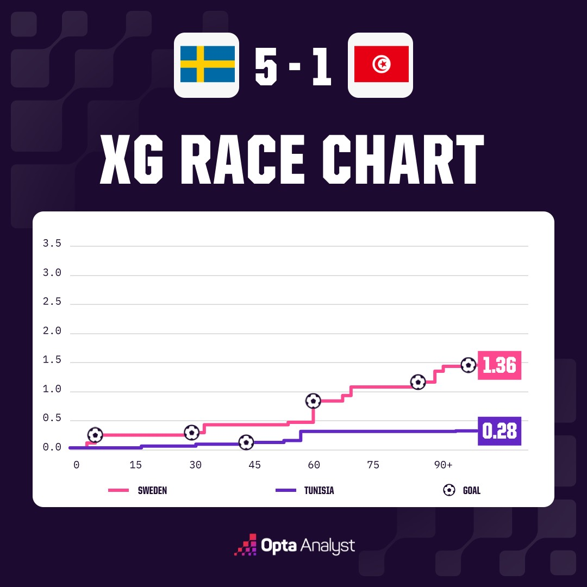
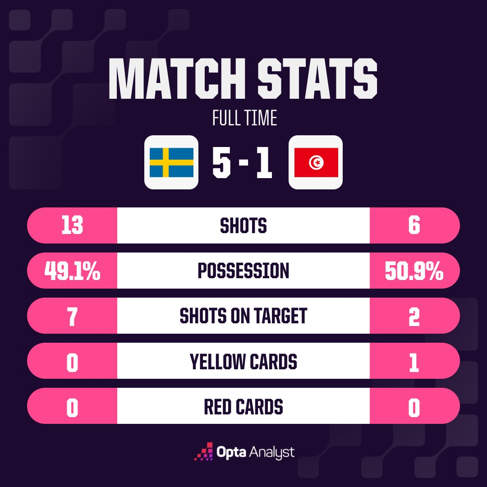
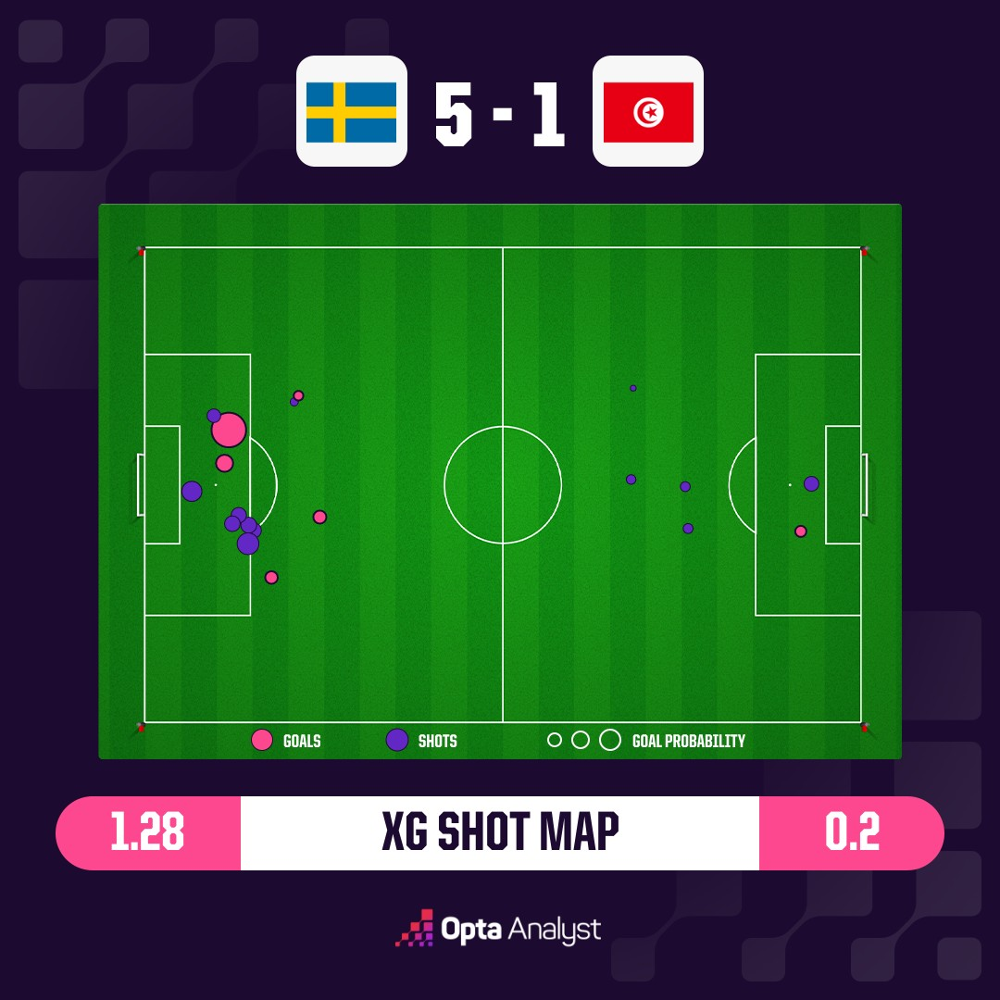
90+7'
FULL-TIME! The referee sounds the final whistle, and it’s all over. Sweden get the win, with a 5-1 triumph over Tunisia.
90+6'
GOAL! Sweden have extended their lead! It's Yasin Ayari who has got the goal, and Tunisia are now four goals behind, with Sweden now in a strong position to record a victory.
90+4'
No luck – it’s offside! Firas Chaouat looked to dart in behind and get on the end of a pass, yet they just went too early, and the flag is up to signal offside.
90+3'
A rash challenge from Ali Abdi, who sends Gustaf Lagerbielke tumbling, giving Sweden a free-kick. It is not in a threatening position, but it gives them a chance to get back on the ball.
90+3'
Kristoffer Nordfeldt is called into action to keep out a shot from outside the box by Elias Achouri. The effort from the Tunisia player was on target, but Sweden shot-stopper got to it.
90+2'
Foul! A free-kick now in a dangerous area for Tunisia, after Elias Achouri is fouled by Victor Lindelöf. Can Tunisia make the most of this opportunity?
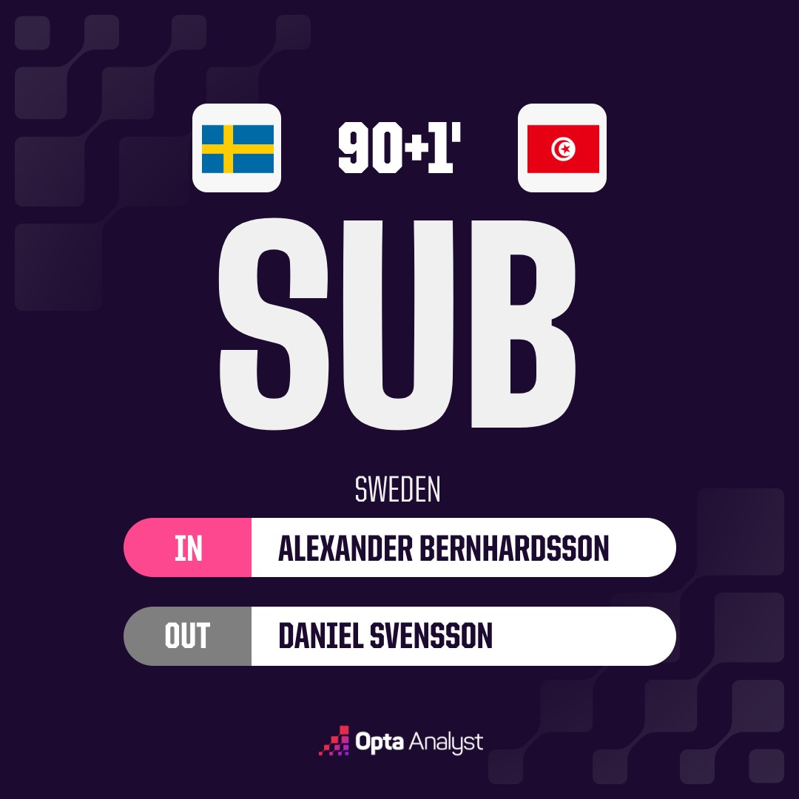
90+1'
Substitution! Daniel Svensson replaces Alexander Bernhardsson for Sweden as the manager shuffles the pack. Can Daniel Svensson make an impression as this match continues?
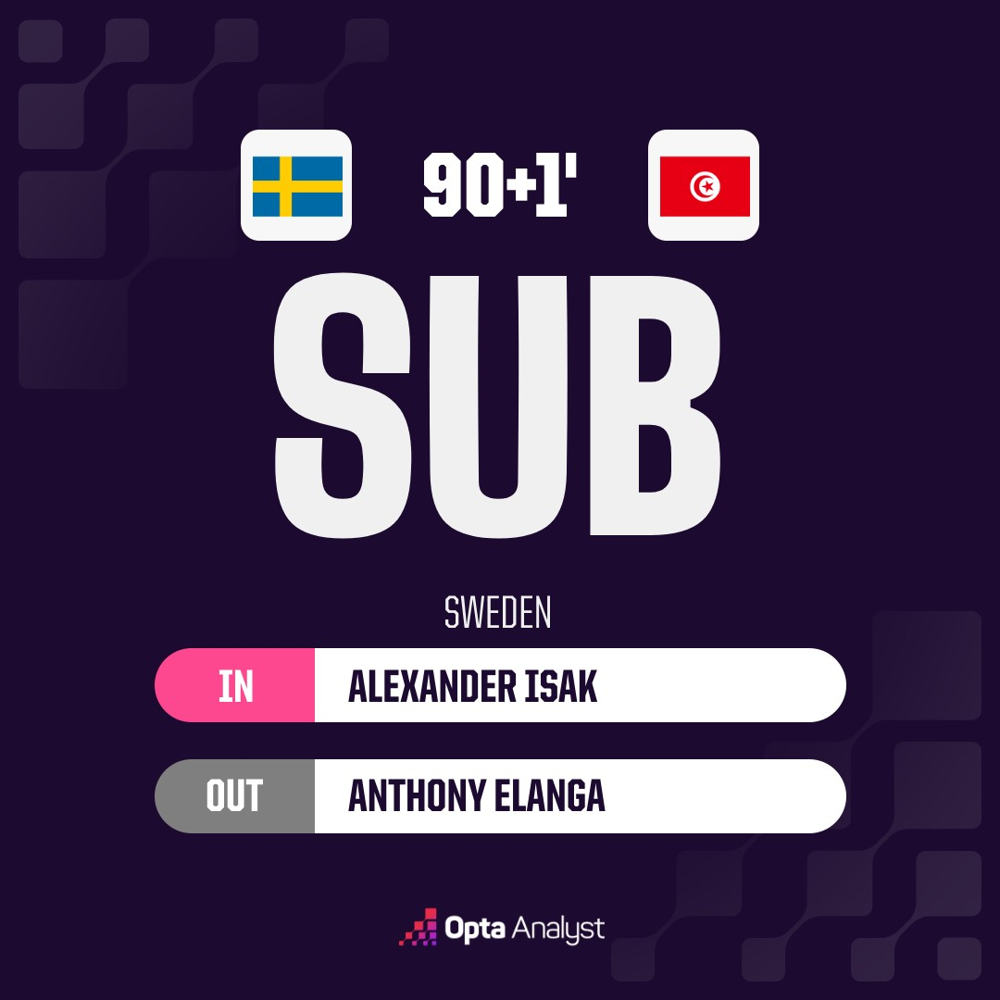
90+1'
The Sweden manager is looking to the substitutes’ bench, bringing on Anthony Elanga in place of Alexander Isak. Will the change make a difference? Let’s find out!
90+1'
Corner now for Sweden, as they see a shot from Lucas Bergvall deflected out of play for a set-piece. Tunisia have some defending to do, here. Could this result in a big opportunity?
88'
The Sweden defence steps up in time and there is a frustration for Firas Chaouat, who thought they were through until the flag goes up to signal offside.
88'
Sweden have attempted the last 5 shots in this game, Tunisia last shot was taken by Montassar Talbi in the 56th minute.
88'
Oh no! That should have been in! Alexander Isak was through but could not keep their composure when it mattered most. Sweden still lead, but they have not been able to extend it. Will that be the good fortune Tunisia need?
87'
It has been 30 minutes since Tunisia last attempted a shot in this game.
86'
Decision changed! After a VAR check, the decision has been overturned.
86'
Decision checked. VAR is going to look at this incident again, so this decision may well not stand. Let’s wait and see what the officials do here.
84'
Sweden have scored 4 goals in the FIFA World Cup game for the first time since 16th July 1994 against Bulgaria (W4-0).
84'
GOAL! Sweden have extended their lead! It's Mattias Svanberg who has got the goal, and Tunisia are now three goals behind, with Sweden now in a strong position to record a victory.
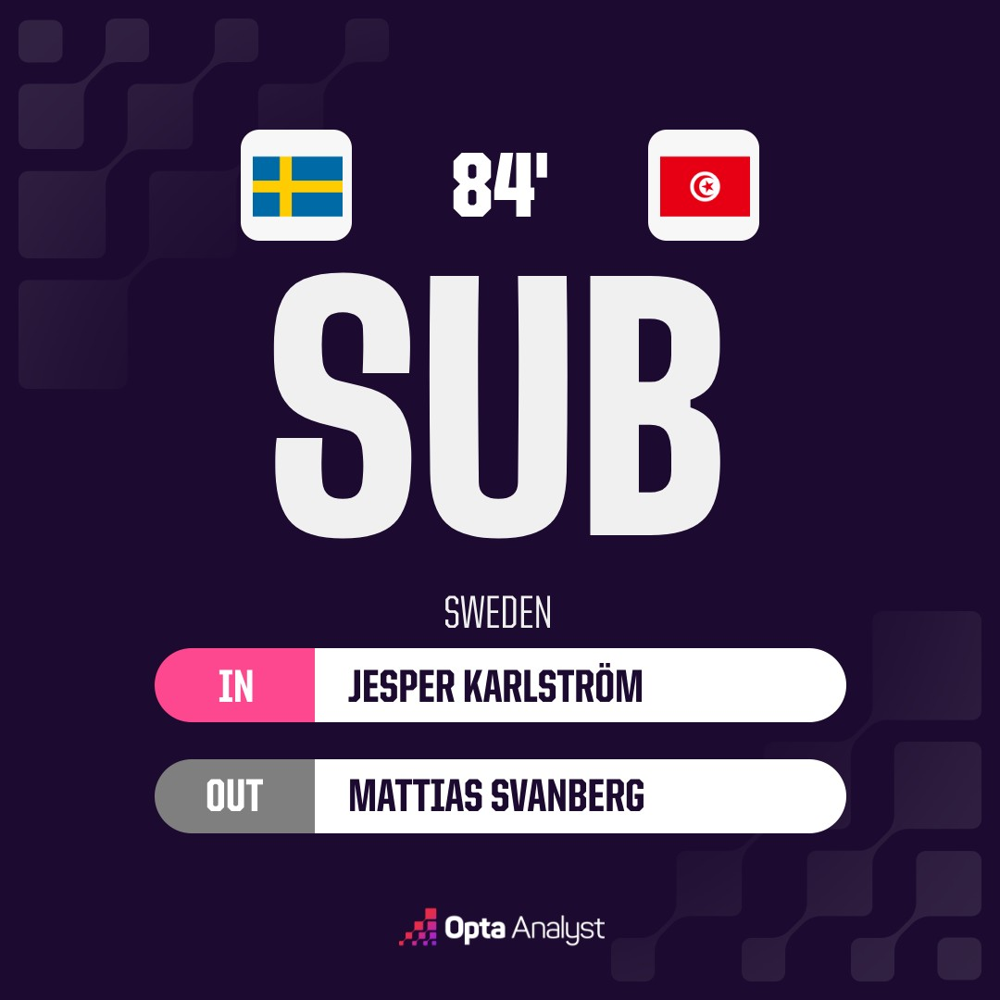
84'
A substitution for Sweden sees Jesper Karlström replaced by Mattias Svanberg. There does not appear to be any obvious sign of an injury, so that is a tactical switch.
84'
The Tunisia manager is looking to the substitutes’ bench, bringing on Firas Chaouat in place of Anis Ben Slimane. Will the change make a difference? Let’s find out!
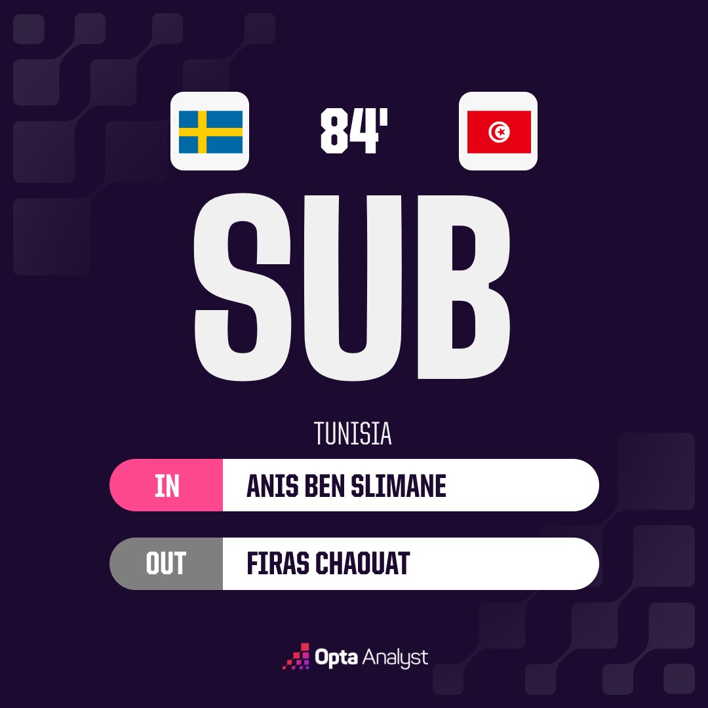
83'
A substitution for Tunisia sees Rani Khedira replaced by Ismaël Gharbi. There does not appear to be any obvious sign of an injury, so that is a tactical switch.
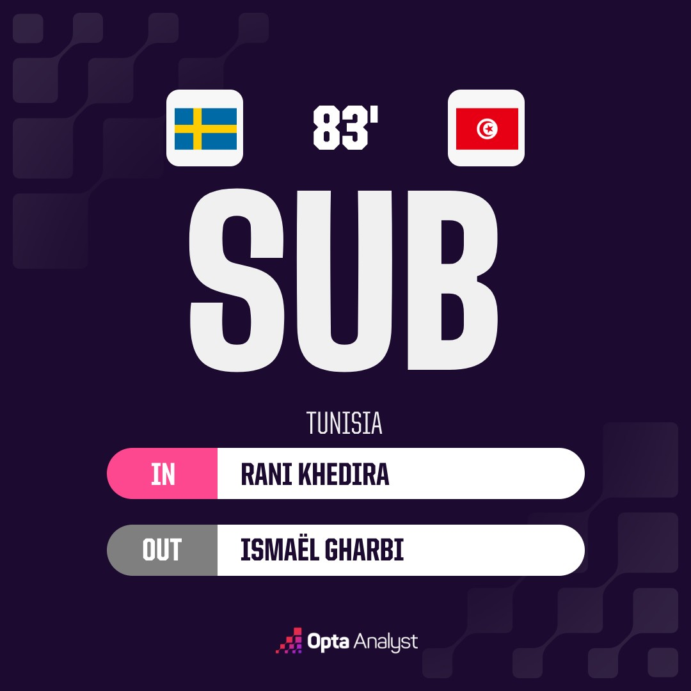
83'
Foul! A free-kick now in a dangerous area for Sweden, after Alexander Bernhardsson is fouled by Ali Abdi. Can Sweden make the most of this opportunity?
80'
Still behind, but Tunisia are refusing to roll over - defensive urgency rising as they fend off more pressure and push for a late turnaround.
78'
That’s offside! A switched-on defensive line from Sweden, as they step up at the right time to catch Elias Achouri offside, and the assistant referee’s flag is up.
78'
This game is certainly in a bit of a lull now, with neither team having had an attempt at goal in the past 10 minutes. It could do with something to spark it into life. Tunisia have had more possession during the quiet spell, but are yet to do much with it.
75'
A rash challenge from Lucas Bergvall, who sends Hannibal Mejbri tumbling, giving Tunisia a free-kick. It is not in a threatening position, but it gives them a chance to get back on the ball.
73'
A free-kick to Sweden, as Sebastian Tounekti goes in and fouls Isak Hien. However, Tunisia will not mind giving one away in this area too much, with plenty of distance to their goal.
72'
Yan Valery’s match is over as Tunisia decide to make a substitution. Hadj Mahmoud enters the field in what looks like a tactical change.
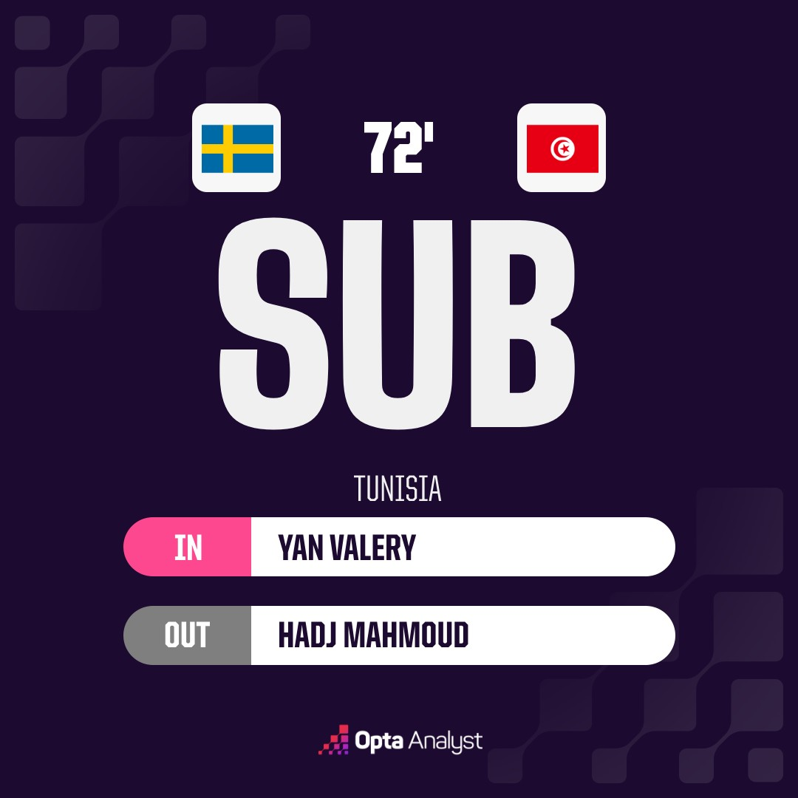
72'
Tunisia are making a tactical change. Elias Saad is leaving the field and in their place comes Sebastian Tounekti – we will soon see if this switch has the desired impact.
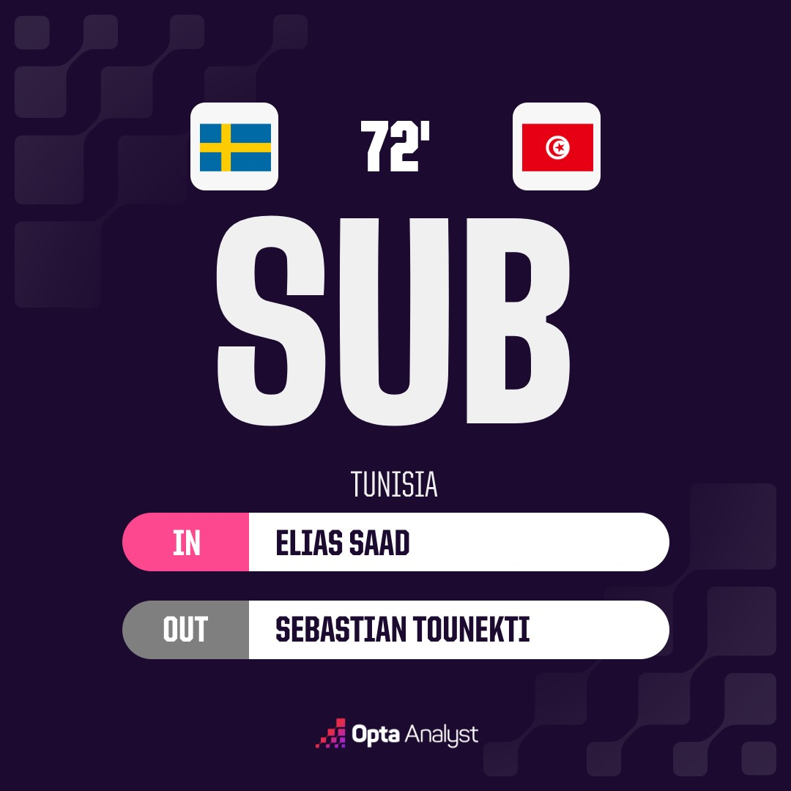
72'
A substitution for Tunisia sees Ellyes Skhiri replaced by Elias Achouri. There does not appear to be any obvious sign of an injury, so that is a tactical switch.
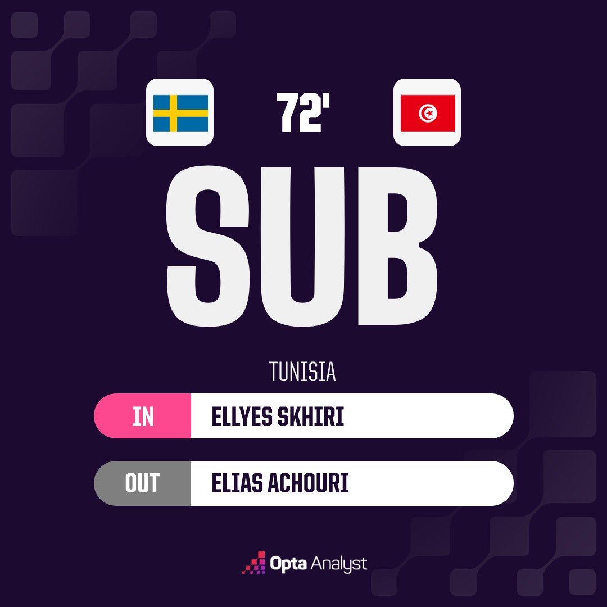
68'
That might have been going in! A fantastic block from Montassar Talbi, who gets in the way of a goal-bound effort from Alexander Isak. Would the goalkeeper have been beaten? We will never know.
66'
That’s offside! A switched-on defensive line from Sweden, as they step up at the right time to catch Anis Ben Slimane offside, and the assistant referee’s flag is up.
66'
MISS! The score remains 3-1, with Tunisia relieved after Sweden’s Viktor Gyökeres goes for goal but sends their attempt off target. Not one to write home about, that one.
66'
With 25 minutes left to play, it’s a good chance to check in on the shot count. Sweden have mustered 7 so far, with 4 of those landing on target. On the other hand, Tunisia have gotten 5 of their 1 of attempts on target.
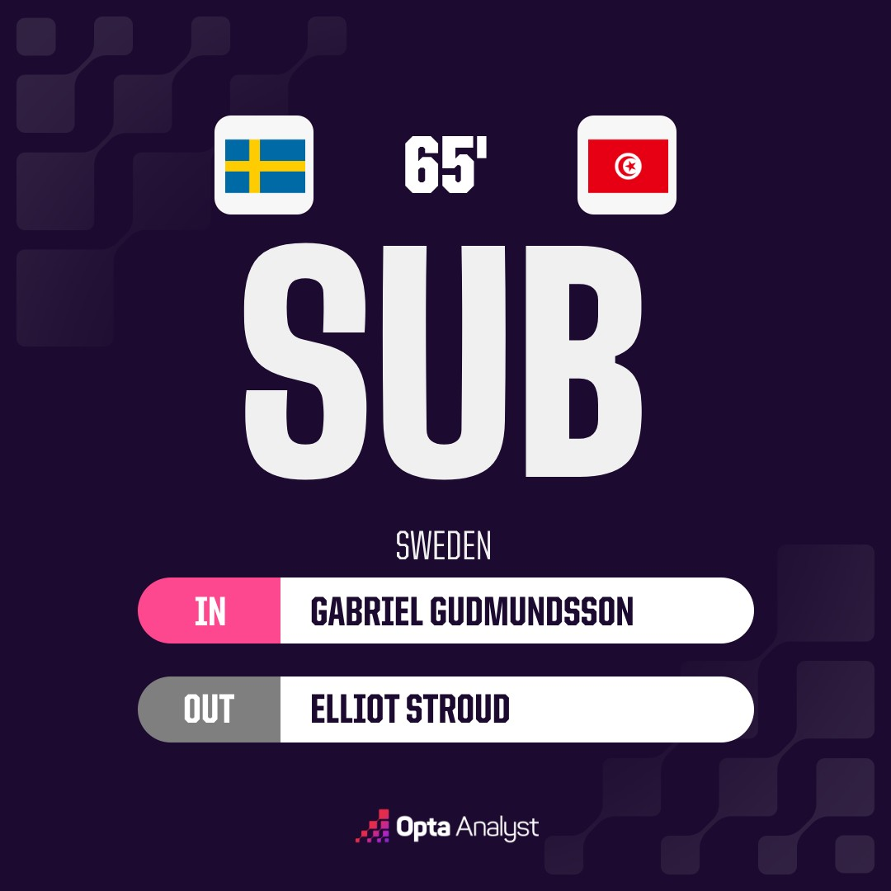
65'
A substitution for Sweden sees Benjamin Nygren replaced by Lucas Bergvall. There does not appear to be any obvious sign of an injury, so that is a tactical switch.
65'
That is bad news for Sweden, as they suffer an injury blow, with Gabriel Gudmundsson having had to receive treatment before then making their way off the pitch. Elliot Stroud is coming on.
63'
Foul! A free-kick now in a dangerous area for Tunisia, after Hannibal Mejbri is fouled by Victor Lindelöf. Can Tunisia make the most of this opportunity?
59'
Sweden have scored 3 goals in the FIFA World Cup game for the first time since 27th June 2018 against Mexico (W3-0).
59'
Is that game over? Sweden are now well ahead, having extended their lead to 2 goals thanks to Viktor Gyökeres’s effort. It’s now 3-1, and Tunisia face an uphill battle to get back into it.
59'
Great defending from Sweden, who are staying organised and winning key battles to preserve their lead.
58'
Plenty of the ball in the last quarter-of-an-hour of this match for Tunisia, but still Sweden stand firm, despite having had only 30.27% of the ball in that period. Can Tunisia make their possessional dominance count?
58'
Free-kick! A foul from Yan Valery on Gabriel Gudmundsson. It is well away from Tunisia’s goal, so it is unlikely to result in a chance for Sweden.
56'
No luck – it’s offside! Alexander Isak looked to dart in behind and get on the end of a pass, yet they just went too early, and the flag is up to signal offside.
56'
No luck! Montassar Talbi takes on a shot that, had they got it right, might have been set to test the goalkeeper, but instead it is sent off target and Sweden come away unscathed.
54'
That is a booking for Rani Khedira, who has received their first yellow card. They are not happy with the decision, but it is done now, and they will have to be careful for the rest of this game.
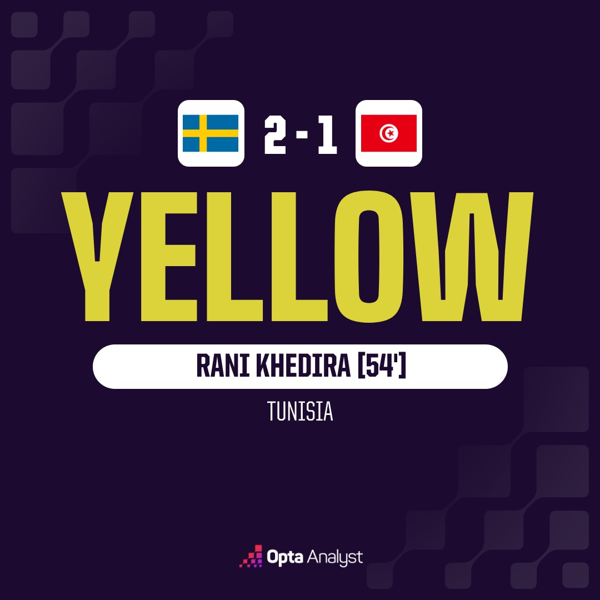
54'
No luck – it’s offside! Alexander Isak looked to dart in behind and get on the end of a pass, yet they just went too early, and the flag is up to signal offside.
53'
BLOCKED! That was close. Viktor Gyökeres got off a shot, which was heading in, but Montassar Talbi was on hand to make a vital intervention. Great block!
52'
MISS! The score remains 1-2, with Sweden relieved after Tunisia’s Hannibal Mejbri goes for goal but sends their attempt off target. Not one to write home about, that one.
51'
A free-kick in a dangerous position now for Tunisia, after a foul from Jesper Karlström on Elias Saad. Can Tunisia make Sweden pay for that rashness from Jesper Karlström?
51'
A free-kick to Tunisia, as Alexander Isak goes in and fouls Mohamed Ben Hmida. However, Sweden will not mind giving one away in this area too much, with plenty of distance to their goal.
50'
That’s offside! A switched-on defensive line from Tunisia, as they step up at the right time to catch Alexander Isak offside, and the assistant referee’s flag is up.
48'
A rash challenge from Yan Valery, who sends Gabriel Gudmundsson tumbling, giving Sweden a free-kick. It is not in a threatening position, but it gives them a chance to get back on the ball.
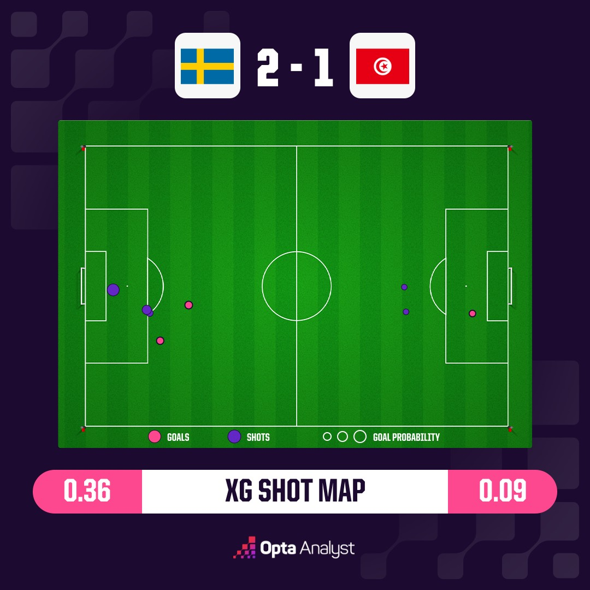
45+5'
The first half comes to a close and it’s Sweden who have the lead over Tunisia at Estadio Monterrey, with the scoreline 2-1 at the interval. Will Tunisia turn this around after the break?
45+3'
Great defending from Sweden, who are staying organised and winning key battles to preserve their lead.
45+1'
A free-kick in a dangerous position now for Sweden, after a foul from Ali Abdi on Alexander Bernhardsson. Can Sweden make Tunisia pay for that rashness from Ali Abdi?
43'
GOAL! Game on! Tunisia are back in this, with Omar Rekik's goal having cut the deficit down to one goal. Can they go on to find a dramatic equaliser?
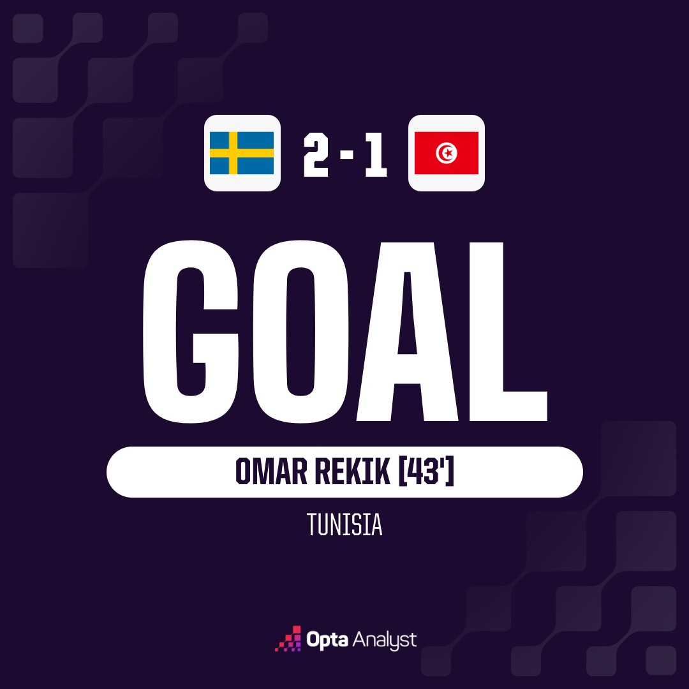
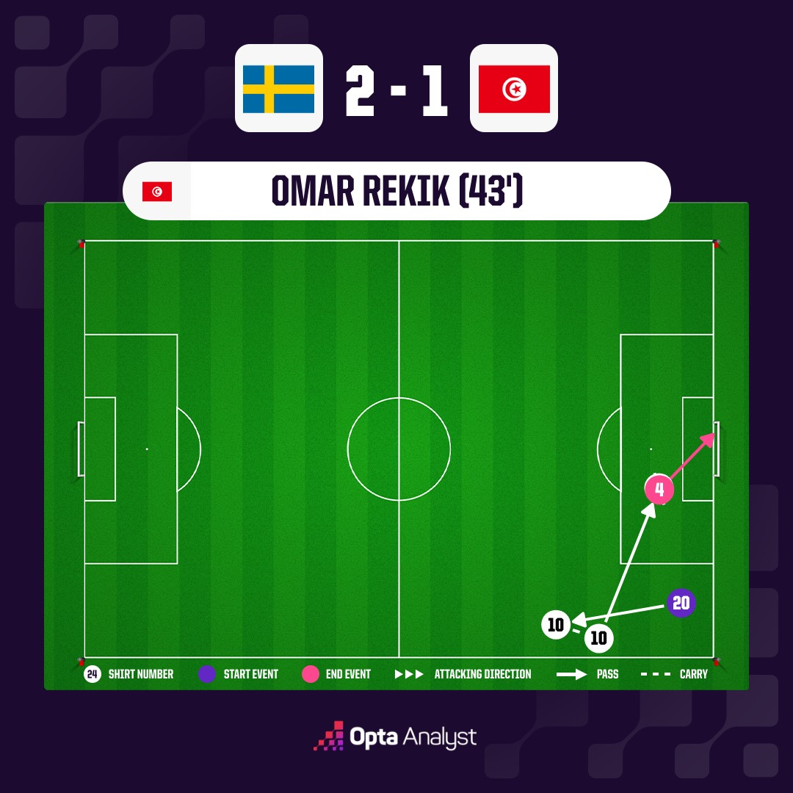
43'
Excellent defensive work from Sweden; their organization and success in key duels are effectively safeguarding their lead.
41'
A free-kick to Tunisia, as Benjamin Nygren goes in and fouls Hannibal Mejbri. However, Sweden will not mind giving one away in this area too much, with plenty of distance to their goal.
41'
Tunisia have not had a shot on target so far in this game.
36'
Despite trailing, Tunisia are showing real defensive grit, digging in and stopping further damage as they try to build a platform.
33'
That is a disappointing effort from Victor Lindelöf, who went for glory but got their attempt wrong, and the shot sailed off target. A frustrating moment for Sweden.
32'
No luck – it’s offside! Elias Saad looked to dart in behind and get on the end of a pass, yet they just went too early, and the flag is up to signal offside.
31'
Shot blocked! Rani Khedira unleashes an attempt at goal, but the ball does not reach its target thanks to Isak Hien, who makes a solid block to stem the danger – for now.
30'
GOAL! Alexander Isak scores, and Sweden are now well in front – surely they will go on and see this one out now? It seems a long way back for Tunisia, with Sweden well in control of this match.
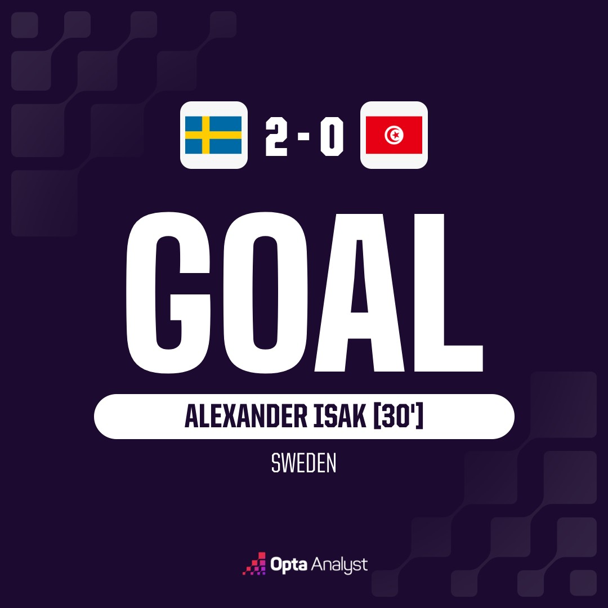
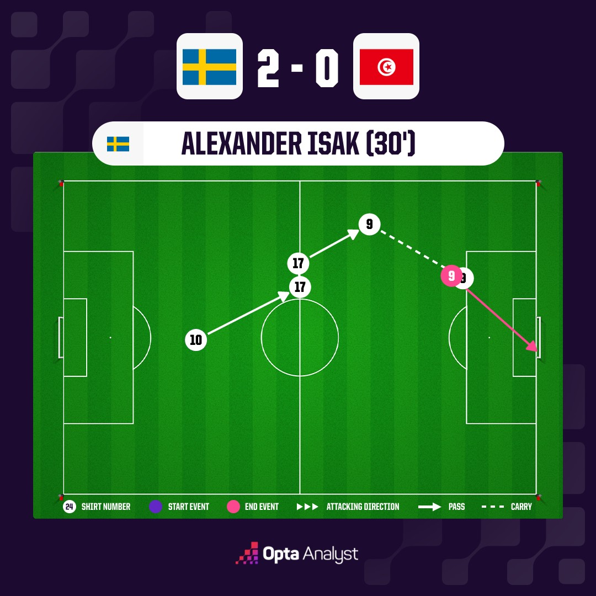
29'
Neither team has had a shot in the past 10 minutes, as this match just enters something of a down period. Tunisia have seen more of the ball, with 55 per cent possession, but Sweden are keeping them away from goal. There is still a chance the match will spark into life, though.
22'
A rash challenge from Gabriel Gudmundsson, who sends Elias Saad tumbling, giving Tunisia a free-kick. It is not in a threatening position, but it gives them a chance to get back on the ball.
22'
Sweden are having plenty of the ball, with 70.14% possession in the last 15 minutes. However, they have been unable to transfer that possessional dominance into a goal during that spell, and are not even generating shooting opportunities, so Tunisia may not be unduly alarmed.
18'
MISS! The score remains 0-1, with Sweden relieved after Tunisia’s Elias Saad goes for goal but sends their attempt off target. Not one to write home about, that one.
17'
A lull in this match, as the teams prob and probe, but without much success. It has been 10 minutes since there was an attempt from either side, though Sweden are seeing more of the ball, with 74 per cent possession to Tunisia’s 26 per cent during that time.
16'
Yasin Ayari goes in on Omar Rekik and concedes a foul. The free-kick is not in a particularly dangerous area from Sweden’s viewpoint, though.
15'
Tunisia may be behind, but they’re battling hard defensively to stop the gap from widening. A gritty response at the back.
13'
No luck – it’s offside! Anis Ben Slimane looked to dart in behind and get on the end of a pass, yet they just went too early, and the flag is up to signal offside.
11'
A foul from Rani Khedira on Yasin Ayari sees Sweden win a free-kick, but it is not in a dangerous position, so Tunisia should be confident they can defend it easily enough.
8'
Strong early signals from Sweden at the back — calm and commanding as they break up attacks with ease.
7'
GOAL! An early strike for Sweden, who take a 1-0 lead. A long-range effort from Yasin Ayari has put them ahead in an ideal start. Can Tunisia find a quick response?
7'
HUGE CHANCE GOES BEGGING! What a miss that is from Viktor Gyökeres, who looked all set to score a goal that their team need, but instead fails to direct their attempt into the back of the net. That was a big, big opportunity for Sweden.
5'
It’s been tight so far, and Sweden are making sure it stays that way with strong defensive discipline and well-timed clearances.
5'
No luck! Viktor Gyökeres takes on a shot that, had they got it right, might have been set to test the goalkeeper, but instead it is sent off target and Tunisia come away unscathed.
3'
A free-kick to Sweden, as Yan Valery goes in and fouls Gabriel Gudmundsson. However, Tunisia will not mind giving one away in this area too much, with plenty of distance to their goal.
1'
KICK-OFF! And here we go! We are up and running in this clash between Tunisia and Sweden at Estadio Monterrey. Stay tuned for all the action as it happens!
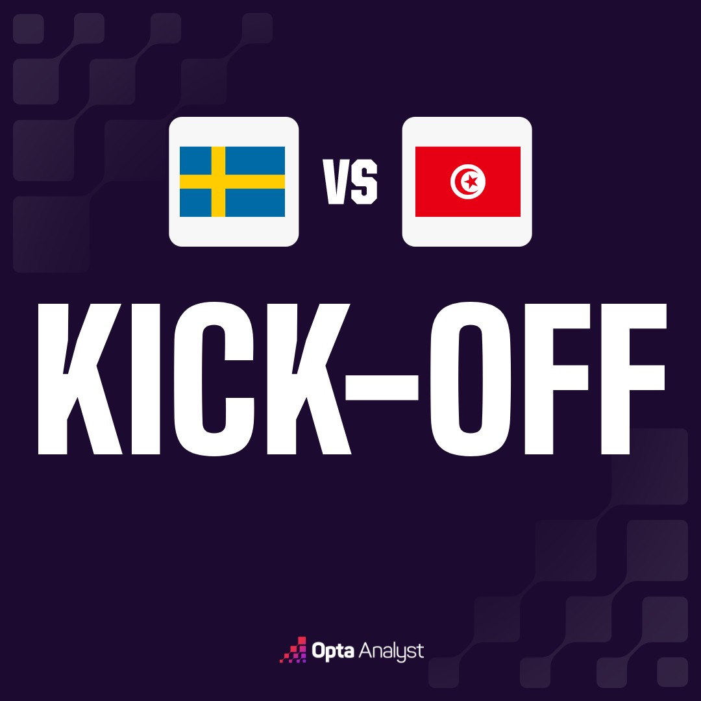
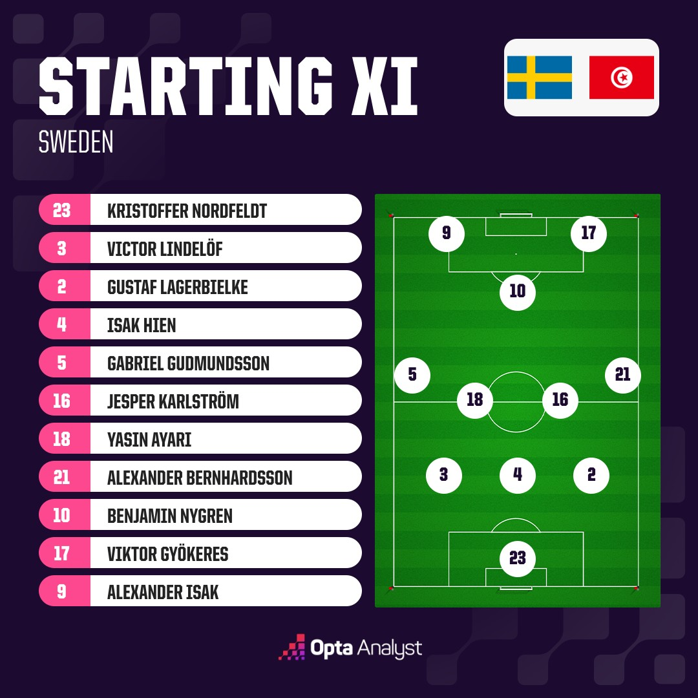
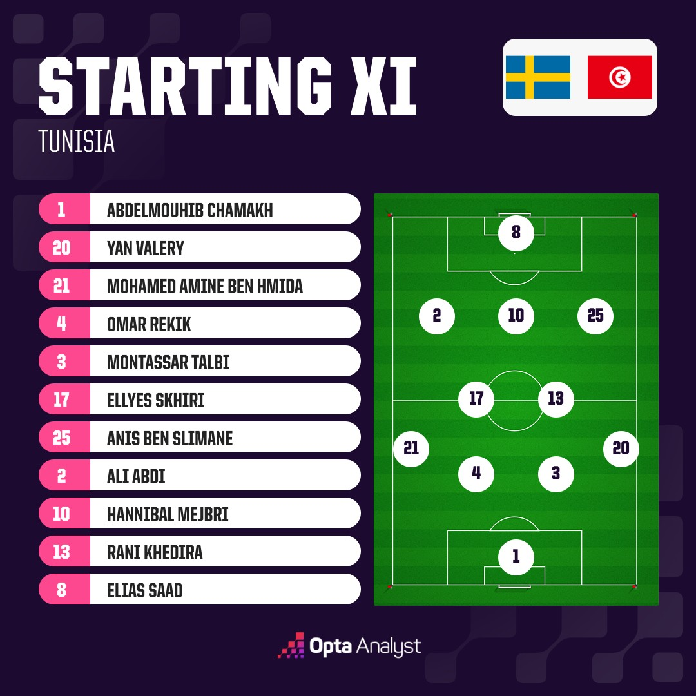
Stuttering Tunisia are winless in three consecutive games going into their FIFA World Cup group stage match against Sweden on Sunday at Estadio Monterrey.
It's the first match of the competition for both sides. Sweden played out a 2-2 draw in their last match, a June 4 friendly against Greece at Strawberry Arena. Viktor Gyökeres and Gustaf Nilsson were on the scoresheet in the draw. In four games this year, they have two wins, one draw, and one loss.
Tunisia were defeated in their last game, losing 5-0 against Belgium in a friendly at Stade Roi Baudouin on June 6. In 2026, they have won one, drawn one, and lost three.
Tunisia won the last encounter between the clubs, emerging victorious 1-0 in February 2003.
Gyökeres has caught the eye this year for Sweden. He leads the side with five goals. Tunisia's leading attacking threats this year have been Firas Chaouat and Sebastian Tounekti, who have each netted once.
Tunisia have struggled to find success in the final third of late, as they have gone 353 minutes in all competitions without scoring. They last found the net against Haiti in a March friendly.
In their last six matches in all competitions, Sweden have won two, drawn two and lost two. The Swedish side scored 11 and conceded 13 in that period, scoring first in two of the six contests. They had four first-half goals, while their opponents netted six times in the first 45 minutes. The Tunisian side have won one, drawn three and lost two in their last six. The Tunisian side scored three and conceded eight in that period, netting first in three of the six. Most of their goals (two) came in the first half, while their opponents netted only one before the break.
-
General
Possession 48.7% 48.74551.25551.3% Possession lost in defensive half 33 333232 Possession lost in middle third 48 485757 Duels 95 959292 Duels success rate 43.2% 43.15855.43555.4% Aerial duels 30 303030 Aerial duels won 50.0% 505050.0% Successful dribbles 5 577 Fouls won 8 81010 Offsides 3 366 Corner awarded 4 422 -
Distribution
Passes 356 356371371 Long passes 58 585353 Long passes proportion (%) 16.3% 16.29214.28614.3% Passing accuracy 78.1% 78.0978.70678.7% Passes in opponents' half 201 201205205 Passing accuracy in opponents' half (%) 66.7% 66.66770.73270.7% Total passes in the final third 108 108108108 Passing accuracy in final third (%) 63.9% 63.88961.11161.1% Forward passes 237 237240240 Forward passes (%) 66.6% 66.57364.6964.7% Through balls 1 122 Final third entries 47 476363 Penalty area entries 24 242020 Total open play crosses 6 699 Crosses 12 121313 Crossing accuracy 25.0% 2523.07723.1% -
Attack
Goals 5 511 Shots 13 1366 Shots on target 7 722 Blocked shots 3 311 Headed shots 1 122 Shots outside the box 4 444 Shots inside the box 9 922 Shots accuracy excluding blocked shots 70.0% 704040.0% Shooting accuracy 53.8% 53.84633.33333.3% Key Passes 11 1144 -
Defence
Tackles 14 142121 Tackles success rate 64.3% 64.28657.14357.1% Clearances 23 231313 Interceptions 6 666 Recoveries 41 414040 Attacking third recovery 6 622 Defensive third recovery 21 212525 Midfield third recovery 14 141313 Recoveries in attacking half (%) 14.6% 14.63455.0% -
Discipline
Fouls conceded 10 1088 Yellow cards 0 011 Red cards 0 000